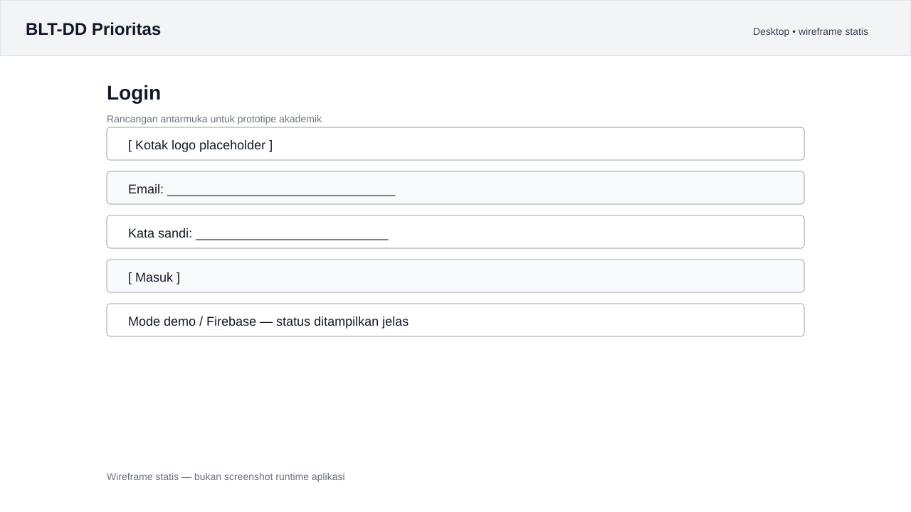
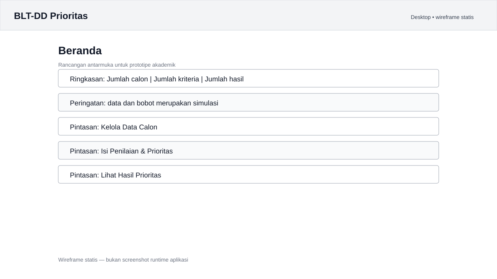
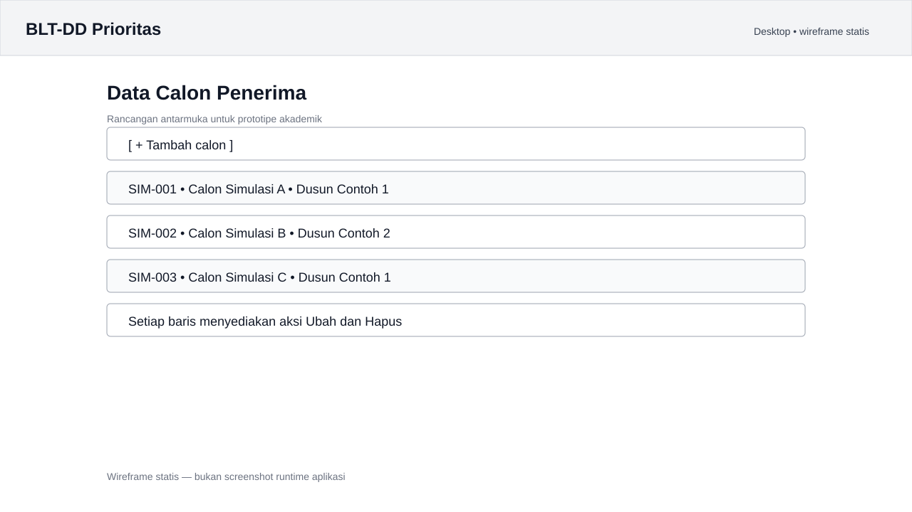
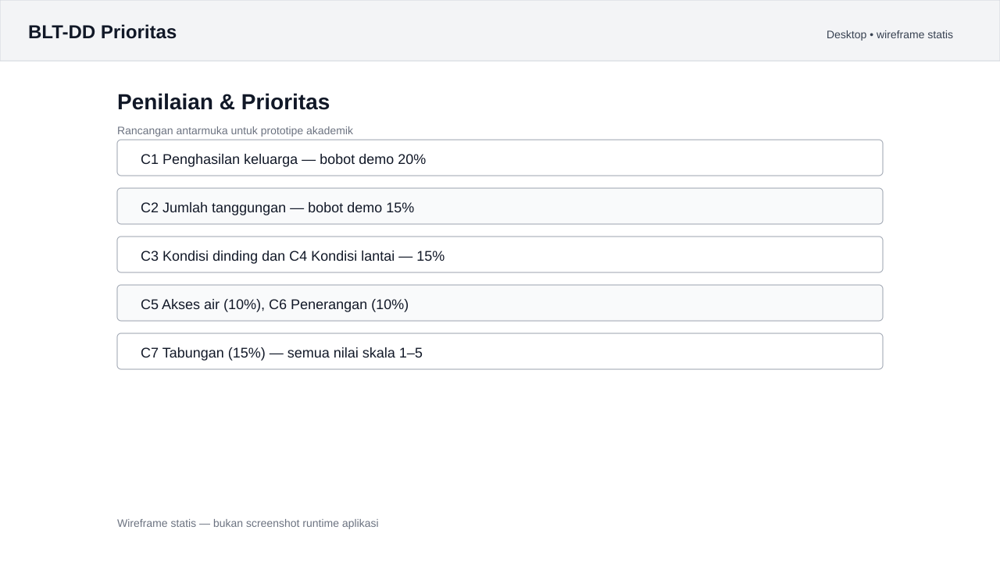
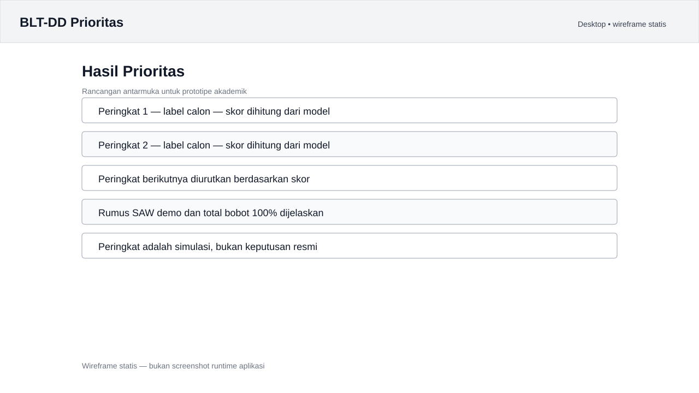

Pendataan calon penerima BLT-DD dan penilaian tujuh kriteria kerentanan masih sering dilakukan dengan beberapa berkas spreadsheet yang terpisah. Cara ini menyulitkan pembaruan data, menyulitkan penelusuran riwayat perubahan, dan membuka ruang perbedaan perhitungan antar petugas.
Ketika tujuh kriteria tidak diterapkan dengan urutan dan bobot yang sama, perbandingan antar calon sulit dipertanggungjawabkan. Petugas juga membutuhkan waktu lebih lama untuk menyiapkan bahan musyawarah desa. Prototipe ini menyatukan pendataan calon, validasi formulir, penilaian tujuh kriteria, dan peninjauan urutan prioritas dalam satu alur kerja yang konsisten.
| Termasuk | Di luar lingkup |
|---|---|
| Login petugas, CRUD data calon, validasi formulir, tujuh kriteria skala 1–5, skor SAW, pengurutan, tampilan responsif Web/Android. | Pencairan dana, integrasi sistem pemerintah, data warga nyata, keputusan resmi penerima bantuan, dan verifikasi lapangan. |
Calon Simulasi A–E, SIM-001–SIM-005).
Pendataan dan penilaian calon yang tersebar, manual, serta sulit ditelusuri.
Petugas pengelola data BLT-DD di tingkat desa.
CRUD dan validasi menjaga kualitas data; penilaian dan skor SAW adalah inti penentuan urutan.
Firebase Authentication untuk sesi, Cloud Firestore untuk data calon, dengan security rules berbasis role.
| Nama persona | Petugas Pengelola Data BLT-DD (label peran, bukan orang nyata) |
|---|---|
| Konteks | Pemerintah desa; pengelolaan data calon dan penyiapan bahan peninjauan prioritas. |
| Tujuan | Mengelola daftar calon dengan struktur konsisten, memperbarui nilai, meninjau skor dan urutan, serta mengetahui status mode data. |
| Masalah | Data tersebar; perbandingan manual memakan waktu; dasar penilaian dan perubahan nilai sulit diperiksa. |
| Kebutuhan | Login dengan pesan kesalahan; CRUD; satu formulir tujuh kriteria; skor dan ranking dari nilai tersimpan; peringatan hasil simulasi. |
| ID | User story | Kriteria penerimaan |
|---|---|---|
| US-01 | Sebagai petugas, saya ingin login agar dapat membuka halaman pengelolaan. | Email kosong/format salah ditolak; kata sandi minimal 6 karakter; kredensial salah memberi pesan; login berhasil menuju Beranda. |
| US-02 | Sebagai petugas, saya ingin melihat ringkasan agar mengetahui kondisi daftar. | Jumlah calon dari data termuat; jumlah kriteria tujuh; pintasan membuka halaman benar. |
| US-03 | Sebagai petugas, saya ingin menambah calon agar data terkelola. | ID simulasi, nama, dusun, dan tujuh nilai wajib; ID duplikat ditolak; setelah simpan calon tampil. |
| US-04 | Sebagai petugas, saya ingin mengubah calon agar koreksi data terlihat. | Form memuat nilai lama; setelah simpan daftar menampilkan perubahan; ID dokumen tidak berubah. |
| US-05 | Sebagai petugas, saya ingin konfirmasi sebelum menghapus. | Batal mempertahankan data; Hapus menghilangkan data setelah operasi berhasil; error ditampilkan. |
| US-06 | Sebagai petugas, saya ingin mengisi kriteria agar calon dibandingkan konsisten. | Tujuh dropdown skala 1–5; field wajib; perubahan disimpan melalui Simpan. |
| US-07 | Sebagai petugas, saya ingin melihat ranking agar dapat meninjau skor. | Skor dihitung dari nilai dan bobot; ranking menurun; hasil bertanda simulasi/bukan keputusan resmi. |
| US-08 | Sebagai petugas, saya ingin memakai aplikasi di web dan ponsel. | Layar sempit memakai NavigationBar; lebar memakai NavigationRail; seluruh menu bisa dibuka. |
| US-09 | Sebagai petugas, saya ingin keluar agar sesi tidak tetap aktif. | SignOut dipanggil di Firebase; mode demo menghapus sesi lokal; pengguna kembali ke Login. |
Status: jalur mode demo US-01 sampai US-08 diuji otomatis (24 test lulus). Jalur Firebase pada US-01 dan US-09 belum diuji karena project belum dikonfigurasi.
| Kode | Kebutuhan | Fitur | Bukti pemeriksaan |
|---|---|---|---|
| K-01 | Login dan mengetahui login gagal | Validasi email/password, loading, error, logout | 6 test login/logout (mode demo) |
| K-02 | Ringkasan kondisi data | Jumlah calon/kriteria, pintasan | Ringkasan dihitung dari data; screenshot runtime |
| K-03 | Mengelola calon | Tambah, lihat, ubah, hapus, konfirmasi | 4 test CRUD/validasi (mode demo) |
| K-04 | Mengisi tujuh nilai konsisten | Dropdown skala 1–5, field wajib | Test model kriteria dan validator |
| K-05 | Kode simulasi unik | ID simulasi wajib dan cek duplikat | Test ID duplikat |
| K-06 | Meninjau hasil | Normalisasi, pembobotan, pengurutan | 5 test model + screenshot |
| K-07 | Akses pada layar berbeda | NavigationBar dan NavigationRail | 2 test viewport 420/1280 px + screenshot 390 px |
| K-08 | Mengetahui status data | Status Demo/Firebase, pesan error | Label demo tampil; jalur Firebase belum diuji |
Kebutuhan dipetakan ke halaman dan bukti di docs/rancangan/KEBUTUHAN.md. Matriks pengujian lengkap ada di docs/PENGUJIAN.md.
Rincian langkah dan kondisi gagal: docs/rancangan/USER_FLOW.md.
Sitemap lengkap: docs/rancangan/SITEMAP.md.
Wireframe tersedia di Figma:
BLT-DD Prioritas — Wireframe.
Lima SVG di docs/screenshots/ juga disertakan di bawah sebagai
aset rancangan, bukan screenshot runtime, sehingga PDF tetap terbaca tanpa
akses Figma. Screenshot implementasi aktual tersedia di
docs/screenshots/runtime/.





| Lapisan | Teknologi | Keterangan |
|---|---|---|
| Aplikasi | Flutter 3.47.7 / Dart 3.13.5, Material 3 | Satu basis kode untuk Web dan Android; responsif pada breakpoint 760 px. |
| Model & perhitungan | Dart murni | Tujuh kriteria, normalisasi, bobot, skor SAW, ranking, dan tie-break. |
| Autentikasi | Firebase Authentication | Email/Password; kode aktif hanya bila konfigurasi --dart-define lengkap. Belum diuji dengan project nyata. |
| Database | Cloud Firestore + Security Rules | Koleksi calon_penerima dan users; rules berbasis role. Belum diuji di Emulator Suite. |
| Backend mode demo | Penyimpanan di memori | Data contoh dimuat ulang saat aplikasi dibuka; dipakai untuk demo publik. |
| CI/CD | GitHub Actions, GitHub Pages | Analyze, 24 test, build Web, deploy Pages; build APK debug juga berhasil di CI. |
| Dokumentasi video | Remotion 4, React 19, TypeScript 5.9, Edge TTS | Video 1920×1080, narasi Bahasa Indonesia, tanpa musik. |
AppShell memuat daftar calon dari AppBackend → halaman
menerima List<Candidate> → form mengirim Candidate
kembali → backend menyimpan (memori atau Firestore) → daftar dimuat ulang →
skor dihitung ulang oleh rankCandidates().
Nilai lebih tinggi berarti kondisi lebih rentan; seluruh kriteria diperlakukan sebagai benefit pada demo. Bobot belum divalidasi dengan ketentuan resmi.
Untuk menjaga alur CRUD awal tetap sederhana, data calon dan tujuh nilai kriteria disimpan dalam satu dokumen. Skor dihitung di klien saat halaman hasil dibuka dan belum disimpan sebagai snapshot historis.
calon_penerima| Field | Jenis | Keterangan |
|---|---|---|
idSimulasi | string | Kode unik dalam daftar termuat, mis. SIM-001. |
namaLabel | string | Label calon fiktif, bukan data warga. |
dusun | string | Dusun/kelompok simulasi. |
catatan | string (opsional) | Maksimum 200 karakter pada form. |
scores.C1 … scores.C7 | integer 1–5 | Tujuh nilai kriteria. |
createdAt | timestamp | Server timestamp saat dibuat (jalur Firebase). |
updatedAt | timestamp | Server timestamp saat diubah (jalur Firebase). |
users| Field | Jenis | Keterangan |
|---|---|---|
| ID dokumen | string | UID dari Firebase Authentication. |
role | string | admin atau petugas; dibaca security rules. |
nama | string (opsional) | Nama petugas; tidak dibaca klien saat ini. |
createdAt | timestamp | Opsional. |
users dibuat manual oleh administrator melalui Console/jalur
tepercaya. Rules menetapkan allow write: if false untuk koleksi ini,
sehingga user tidak dapat menaikkan role sendiri. Rules masih draft dan wajib
diuji di lingkungan non-produksi.
| Koleksi | Field utama | Status |
|---|---|---|
penilaian | calonId, nilaiKriteria, penilaiUid, updatedAt | Belum digunakan; nilai masih nested di calon. |
kriteria_bobot | kode, nama, bobot, arah, versi | Belum digunakan; bobot konstanta model. |
hasil_prioritas | calonId, skorAkhir, peringkat, periode, versiBobot | Belum digunakan; hasil dihitung saat tampilan dibuka. |
riwayat_proses | aksi, pelakuUid, waktu, ringkasan | Opsional, belum digunakan. |
firestore.rules tidak membuka akses publik; hanya user terautentikasi dengan role admin/petugas yang boleh mengakses data operasional.| Pemeriksaan | Perintah/Bukti | Status |
|---|---|---|
| Analisis statis | flutter analyze | No issues found |
| Test otomatis | flutter test | 24 test lulus |
| Build Web | flutter build web | Berhasil |
| Screenshot runtime | Chrome headless terhadap build Web | 14 file (7 halaman × 2 viewport) |
| Deploy web | GitHub Actions → GitHub Pages | Aktif, halaman login merespons 200 |
| Build Android | CI flutter build apk --debug | Berhasil dibangun · belum dijalankan di perangkat |
| Video presentasi | Remotion + Edge TTS | 5 menit 7 detik, 1080p |
| Firebase Auth/Firestore | — | Belum diuji — project belum dikonfigurasi |
| Firestore rules | Emulator Suite | Belum diuji/deploy |
| Firebase Hosting | — | Belum di-deploy |
CI: github.com/Bamsuti/BLT-DD-prioritas/actions.
Matriks 15+ skenario: docs/PENGUJIAN.md.
Seluruh pengujian pada tabel ini dijalankan mandiri oleh pembuat proyek melalui mesin lokal dan GitHub Actions; tidak ada pengujian yang menunggu petugas desa. Validasi lapangan persona dan bobot berada di luar lingkup UTS.
| Repository | https://github.com/Bamsuti/BLT-DD-prioritas |
|---|---|
| Demo web | https://bamsuti.github.io/BLT-DD-prioritas/ (mode demo) |
| Video | https://youtu.be/AnvDqdBBxeM · MP4 di repository |
| Wireframe | Figma — BLT-DD Prioritas Wireframe · docs/screenshots/*-wireframe.svg |
| Screenshot | docs/screenshots/runtime/ |
| Panduan Firebase | docs/firebase/SETUP_FIREBASE.md |